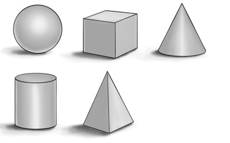
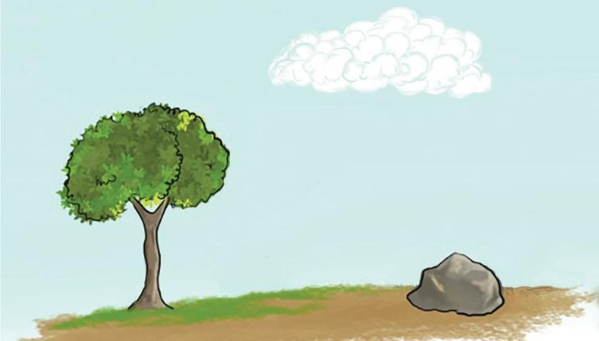

forms which have specific names associated with their shapes. Geometrical forms include spheres, cones, cylinders, pyramids and cubes. Figure 1.32 shows geometrical forms.

Organic or irregular forms: These are forms with irregular edges and are usually formed naturally. They are also called free form because they are indefinite. Examples of organic forms include stones, trees and potatoes. Figure 1.33 shows organic forms.

Space
This is an element of art that is created by an area around, above, below and within an object. Space is significant in the creation of the illusion of depth in a painting or drawing. Space in art is categorised into two types which are positive and negative space.